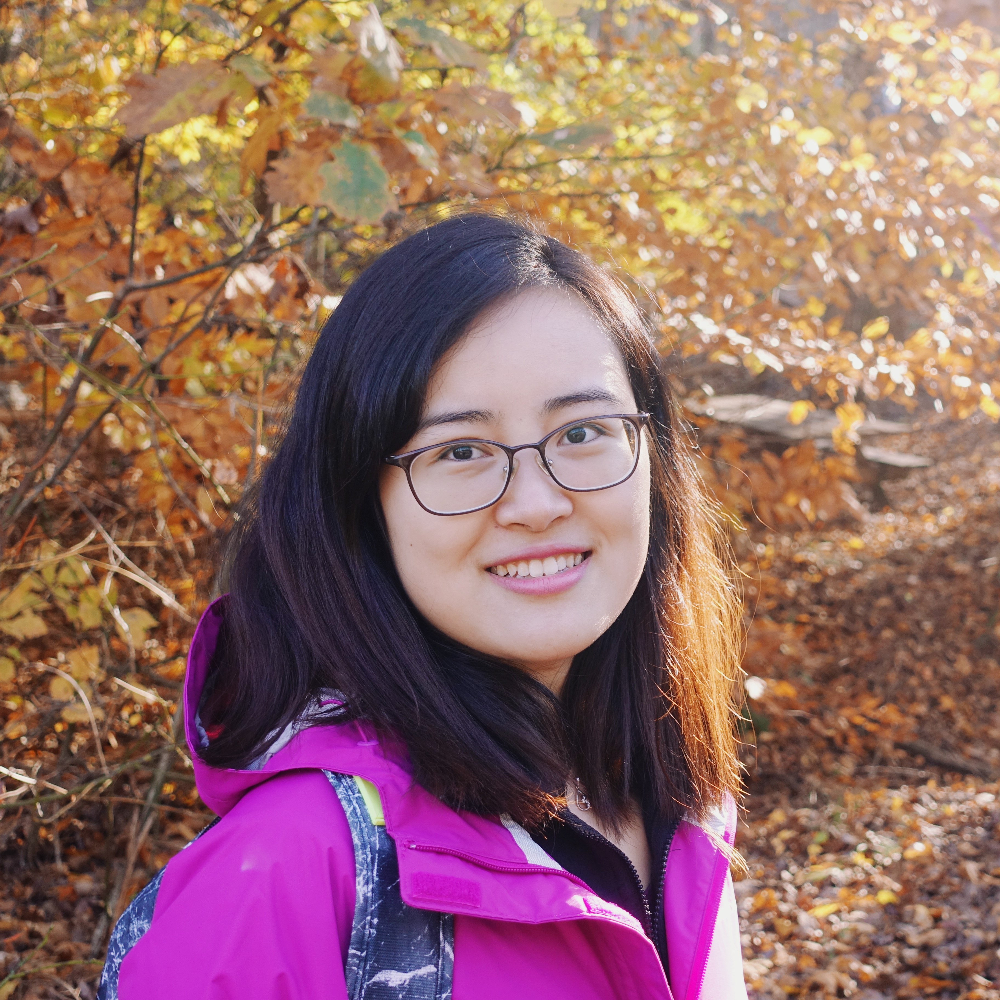
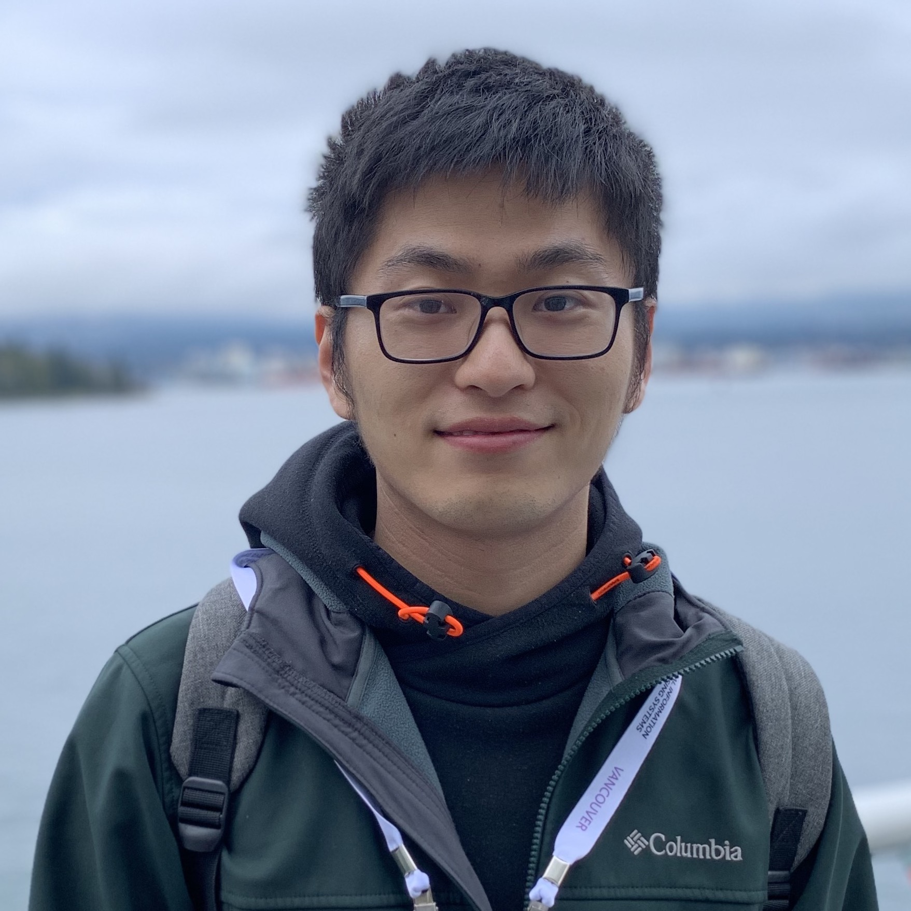
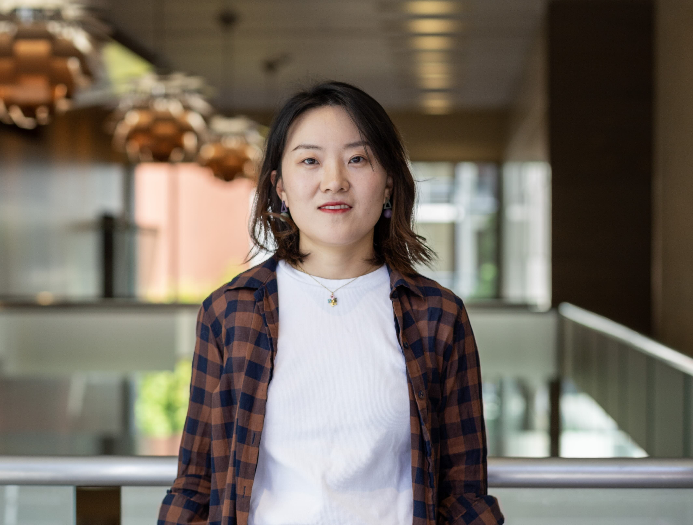
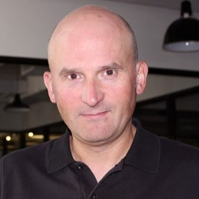

About the Workshop
Large Language Models (LLMs) are increasingly embedded as core components of modern data-centric systems, supporting tasks such as data exploration, analytics, decision support, and automated reasoning over large-scale and heterogeneous datasets. While recent advances have significantly expanded the capabilities of LLM-powered systems, their deployment in real open-world environments has exposed fundamental security and trustworthiness challenges.
We invite researchers and practitioners to submit papers to SeT-LLM '26, which aims to identify these emerging challenges, discuss novel solutions, and explore constructive perspectives across the full theory–algorithm–application stack, including reliability assurance and evaluation, privacy leakage and copyright protection, interpretability and plagiarism detection, secure deployment, backdoor and adversarial attacks and defenses, toxic content mitigation, and new learning and interaction paradigms for LLM-powered systems. The workshop will be held in person on KDD 2026 (9–13 August 2026) in Jeju Island, Republic of Korea.
Call for Papers
Topics of Interest
We invite submissions on topics including, but not limited to:
- Security: prompt injection, jailbreaks, adversarial prompting, model stealing, unsafe tool use, and robust defense mechanisms in LLM development and deployment.
- Trustworthy Assurance and Evaluation: benchmarks, auditing, uncertainty estimation, calibration, uncertainty estimation, and risk-sensitive evaluation methodologies.
- Privacy and Data Protection: memorization, privacy leakage, data governance, secure fine-tuning, and privacy-preserving inference.
- Robustness and Reliability: Distribution shift, long-context failure, retrieval robustness, dependable reasoning, and resilient multi-agent behavior.
- Alignment and Safety: Harm mitigation, policy compliance, value alignment, controllability, and safe deployment strategies.
- Applications and Case Studies: Healthcare, science, education, legal reasoning, public-sector use, enterprise systems, and other high-stakes settings.
- LLM-based Agents Security & Safety: Security vulnerabilities in agent tool-use, multi-agent cooperation risks, autonomous decision-making alignment, and safety guardrails for LLM agents in open-world environments.
Important Dates
- Paper submission deadline 05 June 2026 (AOE)
- Notification of decision 10 July 2026 (AOE)
- Camera-ready submission 17 July 2026 (AOE)
- Workshop time 10 August 2026, 8am-12pm (Jeju Time, GMT+9)
Submission Information
Submission link: Papers should be submitted via this OpenReview site.
Format: Submissions should follow the ACM two-column conference proceedings format (with ACM Template available on Overleaf). Submissions are limited to 4 pages for main contents with unlimited reference and appendix pages. The accepted submissions are allowed with 1 additional page (5 pages in total for main contents) for the camera ready version.
Policies: SeT-LLM '26 follows a double-blind review process. Submitted manuscripts should be anonymized with identifying information removed. Submissions that are concurrently under review at other venues are acceptable. All accepted papers are non-archival, and will be made publicly available on the workshop website without an official proceeding.
Reviewer recruitment: If you are interested in reviewing submissions, please fill out this form.
Schedule
August 10 · International Convention Center Jeju (ICC Jeju) 303B
| Time | Session |
|---|---|
| 08:05–08:10 | Opening Remarks |
| 08:10–08:45 |
Invited Talk by Tianhang Zheng (Zhejiang University)
LLM Safety Preservation After Alignment
|
| 08:45–09:20 |
Invited Talk by Kai Shu (Emory University)
Beyond Alignment: Inference-Time Steering for Secure and Trustworthy LLMs
|
| 09:20–10:00 | Poster Session & Coffee Break |
| 10:00–10:45 |
Contributed Paper Presentations
|
| 10:45–11:20 |
Invited Talk by Xiangliang Zhang (University of Notre Dame)
Benchmarking Trustworthiness of LLMs: From Static Scores to Dynamic Diagnosis
|
| 11:20–11:55 |
Invited Talk by Yangqiu Song (HKUST)
Trustworthy AI through the Lens of Compliance
|
| 11:55–12:00 | Closing Remarks |
Poster Papers
SeT-LLM '26 papers are non-archival workshop papers. They are made public by the workshop without inclusion in the KDD 2026 conference proceedings.
Cognitive Immunity for Trustworthy LLM Agents: Auditable Failure Memory Against Repeated Safety Errors
Mian Zhang
Poster Non-archival workshop paper
Official OpenReview record · OpenReview PDF · Author-hosted PDF
Organizers




